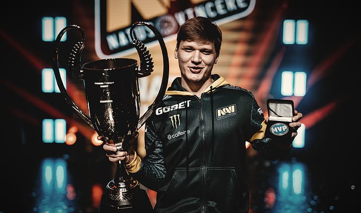

Кіберспортсмен — це професійний гравець у відеоігри, який бере участь у турнірах та заробляє гроші.
Потрібно багато тренуватись (5–10 годин на день), мати швидку реакцію та добре мислення.
✔ Можна заробляти на іграх
✔ Подорожі
✔ Популярність
❌ Велика конкуренція
❌ Нестабільний дохід
❌ Навантаження на здоров’я
Новачки: 5 000 – 15 000 грн
Профі: від 50 000 грн і більше
CS2, Dota 2, Fortnite, Valorant